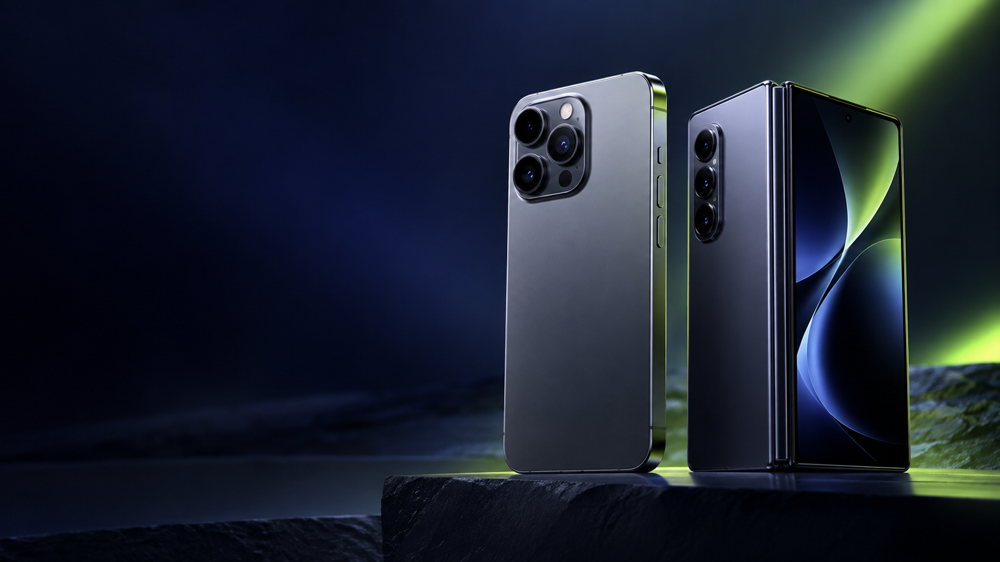

Harga iPhone 18 Pro dan Duo Malaysia: dari RM5,499 hingga RM15,499

Barisan iPhone baharu yang dilaporkan tiba ke Malaysia membawa jurang harga yang sangat besar. Sebelum pra-tempah, pembeli perlu melihat kapasiti storan, tarikh jualan dan keperluan sebenar.
Harga yang dilaporkan
iPhone 18 Pro bermula pada RM5,499 untuk 256GB, manakala iPhone 18 Pro Max bermula pada RM5,999. Model iPhone Duo pula dilaporkan bermula pada RM9,499 dan boleh mencecah RM15,499 untuk storan 2TB.
Jangan lihat nombor permulaan sahaja
Harga terendah biasanya bukan pilihan yang sama untuk setiap orang. Rakaman video, foto, permainan dan fail kerja boleh membuat storan cepat penuh. Bandingkan harga versi storan yang benar-benar sesuai, bukan sekadar harga pada poster.
Tarikh dan ketersediaan
Pra-tempah iPhone 18 Pro bermula 12 September dengan jualan pertama pada 18 September, manakala iPhone Duo menyusul kemudian. Semak halaman rasmi penjual sebelum membuat bayaran kerana tarikh serta stok boleh berubah.